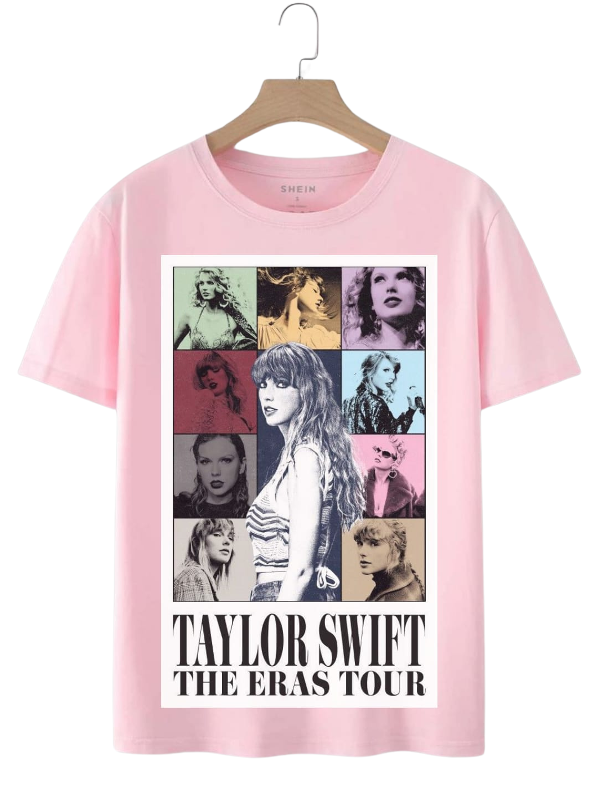

Eras Tour RR
Sudadera edición especial celebrando el Eras Tour 2024 consiguela y vive la mejor era del momento
SPEAK RR
Sudadera Unica, este modelo combina la ternura de lover y la oscuridad de reputation solo hay 50 unidades en venta
Eras Tour RR

Playera casual pero exlusiva y se puede conseguir exclusivamente con comprobante de haber asistido por lo menos a 1 fecha del Eras Tour 2024
In 2025, Taylor Swift shocked her fans with a radical shift in her artistic image. During her Midnight Stories: World Tour, she began wearing an iconic transparent veil adorned with crystals as part of her stage wardrobe. While the accessory allowed her face to be partially visible, it symbolized a message of introspection and personal protection, as she later explained in interviews.
The mystery reached its peak when she released the music video for “Shadows in the Night,” where she remained fully veiled for most of the footage. However, at the end of the video, she removed the veil, revealing a more natural and authentic version of herself. This act was interpreted as a metaphor for vulnerability and openness to her audience.